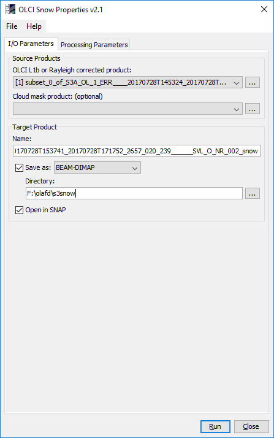

| SNAP Data Processors - Sentinel-3 Snow Processor Description |
|

OLCI L1b or Rayleigh corrected product: Used to select the OLCI L1b source product. The user can specify either an original L1b product, or a product which has been Rayleigh corrected in a preprocessing step using the SNAP Rayleigh Correction processor. Using a Rayleigh corrected product as input will save significant computation time for the snow property retrieval, but note that the Rayleigh correction product MUST contain Rayleigh corrected reflectances for spectral bands 1, 5, 17 and 21 (400, 510, 865 and 1020nm), and in addition for all manually selected spectral wavelengths (see processing parameter descriptions below). - If an original L1b product is set as input product, all required Rayleigh corrected reflectances will be computed from an internal call of the SNAP Rayleigh Correction processor.
Use the ... button to open a data product currently not opened in the Sentinel Toolbox.
Cloud mask product (optional): Used to select an optional source product providing a cloud mask. Usually this product should have been generated in a preprocessing step using the IdePix pixel classification tool in the specific version provided within the SEOM S3 for Snow project [1], but in principle this could be any kind of product containing a mask with values 1.0 indicating cloudy pixels and 0.0 otherwise. A mandatory condition to use this option is that the cloud mask product has been generated on the same raster (i.e. the same OLCI L1b product) which is considered for the snow properties retrieval.
Name: Used to specify the name of the target product.
Save to: Used to specify whether the target product should be saved to the file system. The combo box presents a list of file formats.
Open in SNAP: Used to specify whether the target product should be opened in the Sentinel Toolbox. When the target product is not saved, it is opened in the Sentinel Toolbox automatically.

Select OLCI wavelengths for spectral snow quantities:
The OLCI wavelengths considered for the retrieval of spectral snow quantities. For the selected wavelengths,
the computed spectral snow quantities (i.e. spectral snow albedo, see description of processor output below)
will be written as corresponding band into the target product. If no band is selected, only broadband snow
quantities and other selected, wavelength-independent quantities are written to the target product.
Name of binary mask band in cloud mask product (if present):
The name of the binary mask band in cloud mask product (in case a cloud product was specified).
If the IdePix pixel classification tool has been used to generate this product (the usual case), the cloud mask
band has the default name 'cloud_over_snow'. If no cloud mask product was specified, this processing
parameter has no effect.
Consider NDSI snow mask:
If selected, an NDSI value will be computed from Rayleigh reflectances at wavelengths 865 and 1020nm:
NDSI = (brr865 - brr1020) / (brr865 + brr1020)
The considered pixel will be interpreted as snow pixel if
The default is 'false'.
NDSI threshold for snow identification:
If an NDSI snow mask is considered (previous parameter), the considered pixel will be interpreted as snow pixel if
the NDSI exceeds the threshold specified here, and if the Rayleigh reflectance at OLCI band 1 (400nm) is greater
than 0.5. The default number is 0.03.
Consider snow pollution:
If selected, a test for snow pollution is applied for the considered snow pixel. The snow pixel is regarded as
'polluted' if the Rayleigh reflectance at OLCI band 1 (400nm) is lower than the difference of
a so-called 'R_0 threshold' and another user parameter 'snow pollution threshold' which is specified below. The
retrieval of the 'R_0 threshold' is described in detail in the ATBD [2]. - If the snow pixel is identified as polluted, a
specific snow property algorithm is applied which deviates from the clean snow retrieval. Details are described
in the ATBD [2].
Write additional parameters (f, l, m, R_0) in case of polluted snow (expert option):
If selected, additional parameters related to polluted snow will be computed for the pixels identified as
'polluted' (see above) and written to the target product. The interpretation of these parameters requires
detailed knowledge of the underlying algorithm, therefore this user parameter is considered as an 'expert option'.
The default is 'false'.
Write uncertainties of additional parameters in case of polluted snow (expert option):
If selected together with the previous processing parameter, uncertainties of the additional parameters related to
polluted snow (see previous processing parameter) will be computed for the pixels identifies as 'polluted'
(see above) and written to the target product. The interpretation of these uncertainties requires
detailed knowledge of the underlying algorithm, therefore this user parameter is also considered as an 'expert option'.
The default is 'false'.
Assumed uncertainty of Rayleigh corrected reflectances:
The assumed uncertainty of Rayleigh corrected reflectances, used for the error propagation applied with the previous
processing parameter. Default values is 0.01.
Snow pollution threshold:
Threshold for identification of polluted snow, as explained above with the processing parameter
'Consider snow pollution'. Default values is 0.1.
Compute PPA:
If selected, the spectral probability of photon absorption (PPA) is written to the target product
for each selected OLCI waveelngth. The default is 'false'.
Copy reflectance bands:
If selected, the mandatory Rayleigh corrected reflectances for spectral bands 1, 5, 17
and 21 (400, 510, 865 and 1020nm), computed internally or provided with Rayleigh correction input product,
and in addition the Rayleigh corrected reflectances for all manually selected spectral wavelengths are
written to the target product. The default is 'false'.
OLCI reference wavelength:
Reference wavelength used in the snow property algorithms. See the ATBD [2] for details. Default value is 1020nm.
OLCI SVC gain for band 1 (400nm):
OLCI system vicarious calibration (SVC) gain for band 1 (400nm). See [3] for details and explanations.
Default value is 0.9798, as proposed in [3], Table 2.
OLCI SVC gain for band 5 (510nm):
OLCI system vicarious calibration (SVC) gain for band 5 (510nm). See [3] for details and explanations.
Default value is 0.9892, as proposed in [3], Table 2.
OLCI SVC gain for band 17 (865nm):
OLCI system vicarious calibration (SVC) gain for band 17 (865nm). See [3] for details and explanations.
Default value is 1.0, as proposed in [3], Table 2.
OLCI SVC gain for band 21 (1020nm):
OLCI system vicarious calibration (SVC) gain for band 1 (400nm). See [3] for details and explanations.
Default value is 0.914, as proposed in [3], Table 2.
The processor provides a variable number of output bands, depending on the settings of the processing parameters.
albedo_bb_spherical_vis:
Spherical albedo in broadband visible range.
albedo_bb_spherical_nir:
Spherical albedo in broadband near infrared range.
albedo_bb_spherical_sw:
Spherical albedo in broadband shortwave range.
albedo_bb_planar_vis:
Planar albedo in broadband visible range.
albedo_bb_planar_nir:
Planar albedo in broadband near infrared range.
albedo_bb_planar_sw:
Planar albedo in broadband shortwave range.
grain diameter:
Diameter of snow grains in millimeters.
snow_specific_area:
The 'snow specific area' in square metres. See the ATBD [2] for more details.
ice_indicator:
The 'ice_indicator', which is just the ratio of Rayleigh corrected reflectances at 400 and 1020nm.
quality_flags:
The quality flags band from the OLCI L1b product.
The following case shows the processor output bands if 2 OLCI spectral wavelengths (bands 7 and 9, 620 and 673.75nm) were selected, and all boolean processing parameters explained above set to 'true'.
rBRR_n:
The Rayleigh corrected reflectances for band n. We have band 7 and 9, and in addition the bands
1, 5, 17 and 21 which are mandatory for the snow properties retrieval.
albedo_spectral_spherical_nnnn:
The spectral spherical albedo for the selected OLCI wavelengths nnnn.
albedo_spectral_planar_nnnn:
The spectral planar albedo for the selected OLCI wavelengths nnnn.
ppa_spectral_nnnn:
The spectral probability of photon absorption (PPA) for the selected OLCI wavelengths nnnn.
pollution_mask:
Mask band indicating polluted snow pixels (value 1.0, otherwise 0.0).
f:
Parameter 'f' derived from snow pollution algorithm. Physical meaning: snow impurity absorption coefficient.
See the ATBD [2] for details.
l:
Parameter 'l' derived from snow pollution algorithm. Physical meaning: effective absorption length.
See the ATBD [2] for details.
m:
Parameter 'm' derived from snow pollution algorithm. Physical meaning: absorption Angstrom parameter.
See the ATBD [2] for details.
r_0:
Parameter 'r_0' derived from snow pollution algorithm. Physical meaning: reflectance of nonabsorbing snow layer.
See the ATBD [2] for more details.
f_rel_err:
Relative error of parameter 'f' derived from snow pollution algorithm. See the ATBD [2] for details.
l_rel_err:
Relative error of parameter 'l' derived from snow pollution algorithm. See the ATBD [2] for details.
m_rel_err:
Relative error of parameter 'm' derived from snow pollution algorithm. See the ATBD [2] for details.
r_0_rel_err:
Relative error of parameter 'r_0' derived from snow pollution algorithm. See the ATBD [2] for more details.
ndsi:
NDSI value.
ndsi_mask:
Mask band indicating snow pixels (value 1.0, otherwise 0.0) as identified from NDSI criterion.
[1]
SEOM S3 for Snow project page
[2]
Kokhanovsky, A., Box, J.E., Lamare, M., Dumont, M., Picard, G., Danne, O., and C. Brockmann:
Algorithm Theoretical Basis Document: Snow Properties Retrieval from Sentinel-3. Version 3.0, 30 April 2018.
[3]
Sentinel-3A Product Notice: OLCI Level-2 Ocean Colour